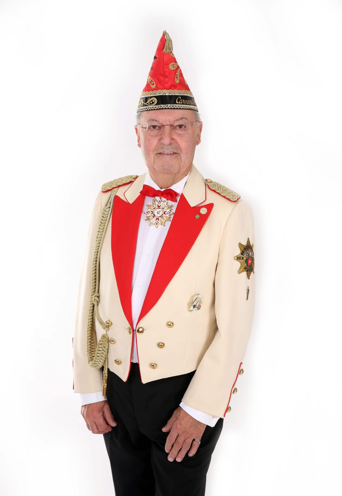
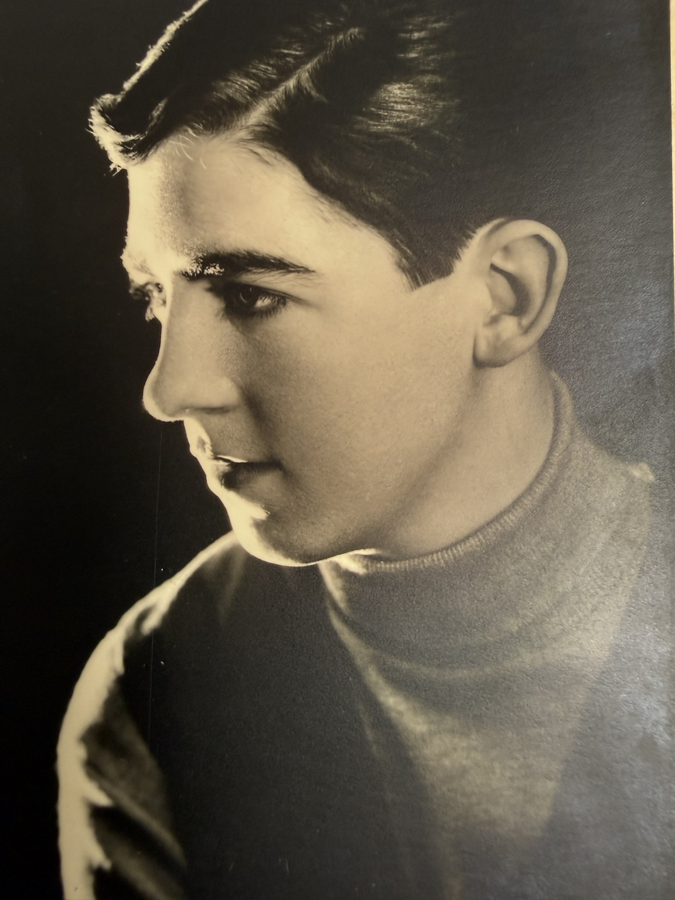
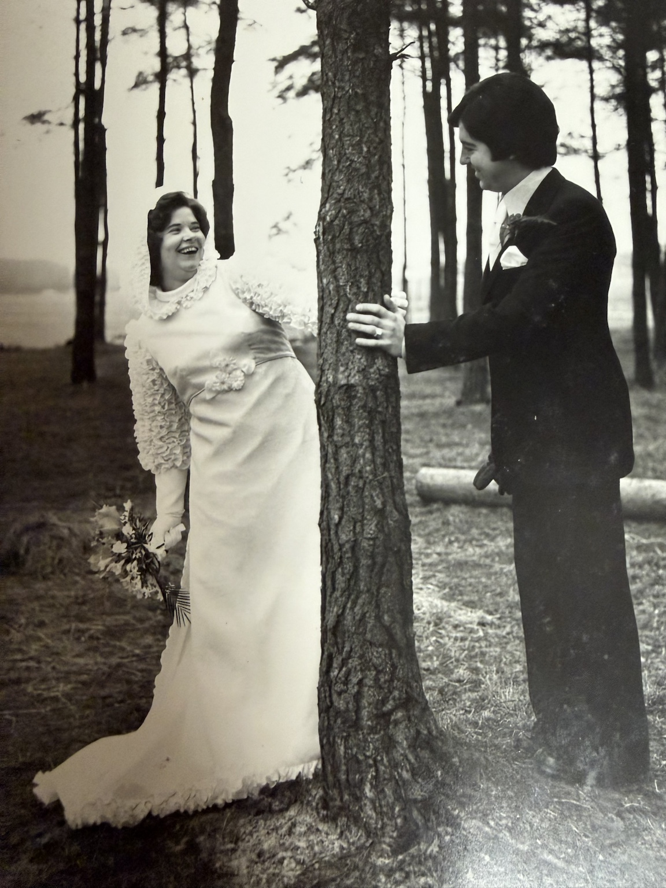
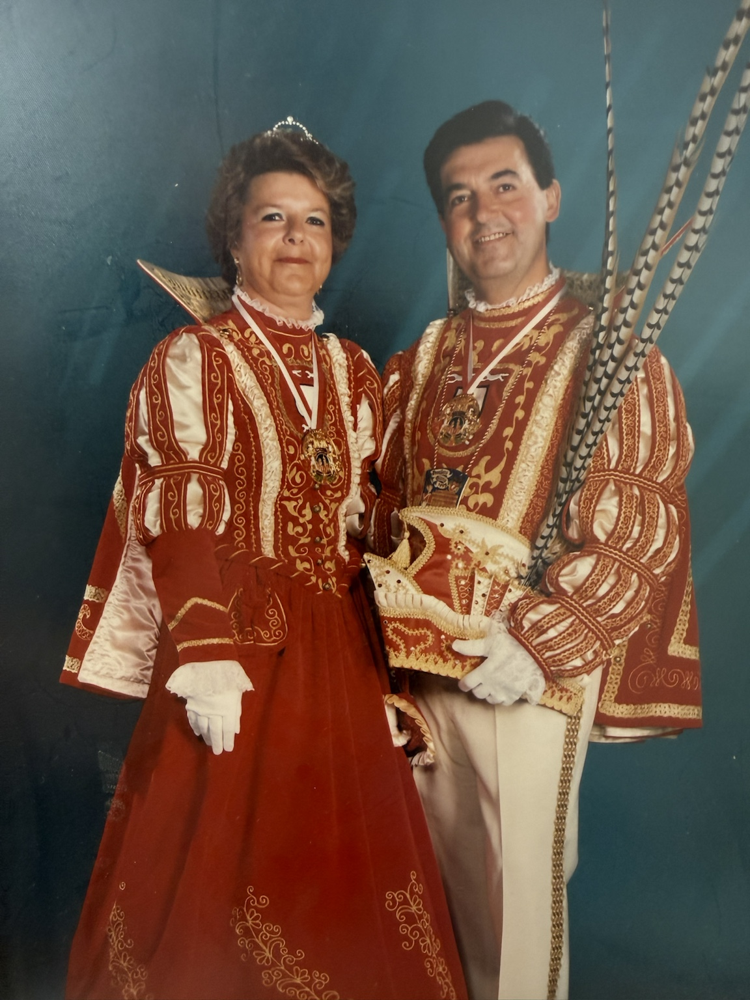
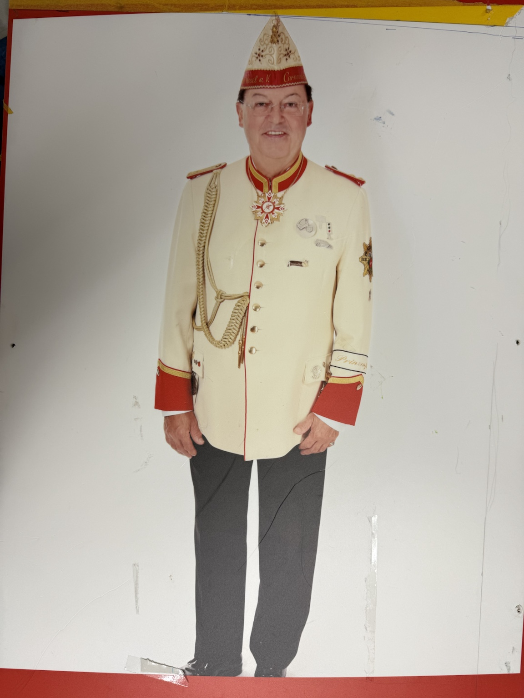
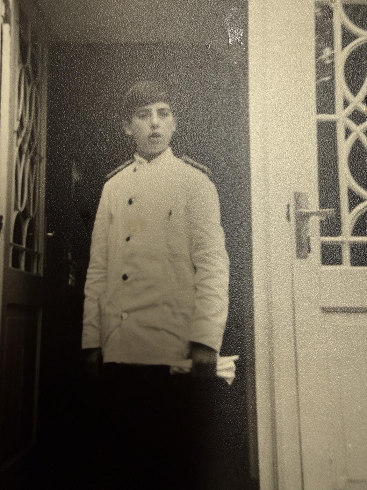
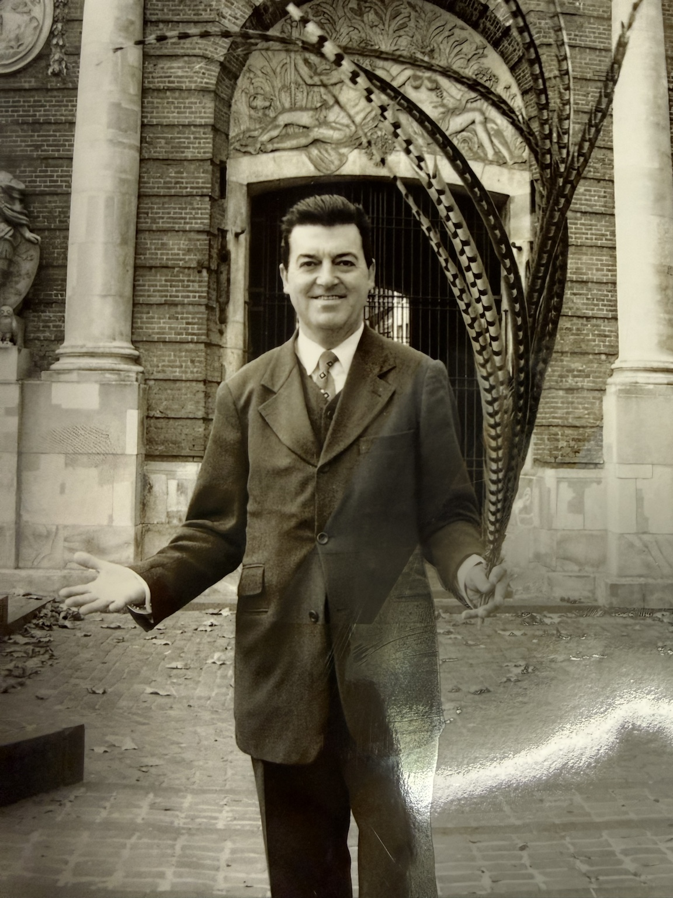
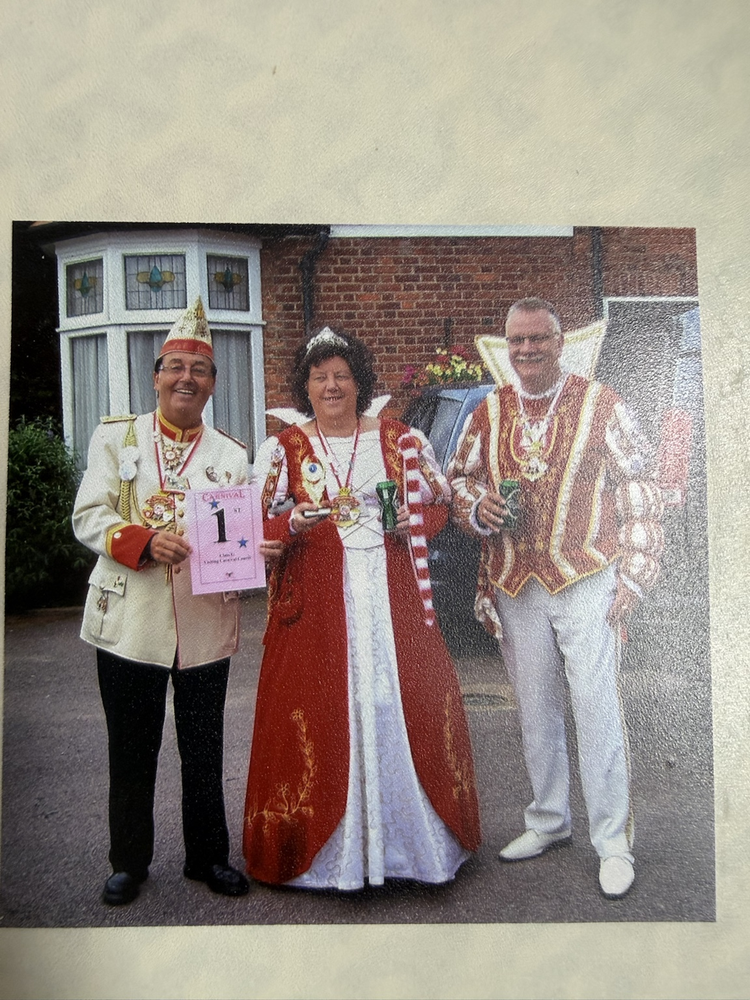
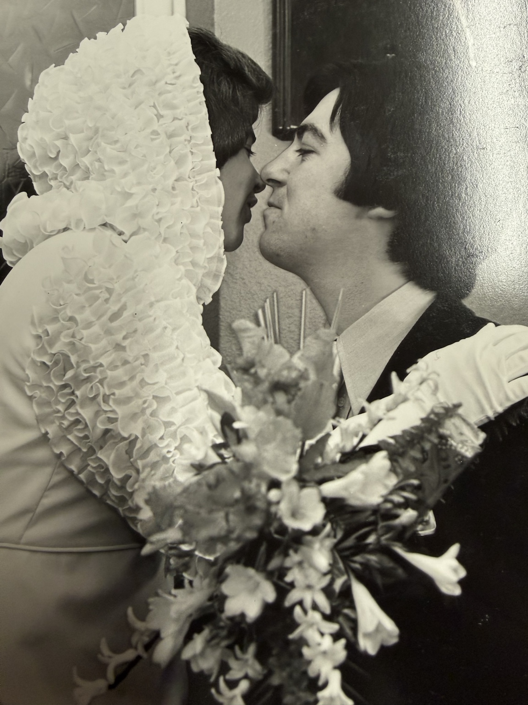
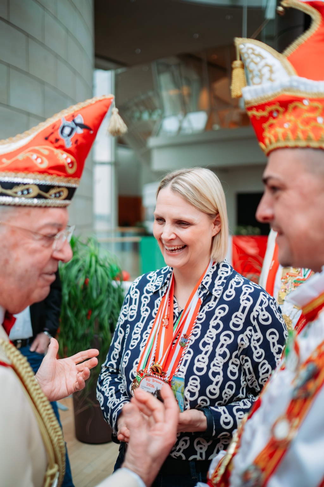

Luc Eben
Eine Institution im Weseler Karneval
Vom Kinderprinzen in Belgien über die eigene Regentschaft als Prinz Luc I. bis zum dienstältesten Prinzenführer des Weseler Karnevals: Luc Eben hat den Karneval in Wesel über Jahrzehnte geprägt.
„Das ist mein Leben, Zeremonienmeister hab’ ich gelernt.“
Ordnung muss sein – und Leidenschaft auch
Als Prinzenführer kümmert sich Luc nicht nur während der Session um die Tollitäten. Termine, Auftritte, Kontakte zu Vereinen und Sponsoren, Orden und das Erscheinungsbild des Prinzenpaares: Für ihn ist die Aufgabe ein Ganzjahresjob. Sein Anspruch ist klar – die Tollitäten repräsentieren die Stadt Wesel und sollen überall einen guten Eindruck hinterlassen.
Karnevalist von Kindesbeinen an
Luc stammt aus Bocholt in Belgien. Über die Pfadfinder kam er schon früh mit dem Karneval in Berührung und wurde in jungen Jahren Kinderprinz. Später war er im Bocholter Karneval aktiv. Anfang der 1980er-Jahre zog es ihn und seine Frau Tilly nach Wesel. Hier übernahmen sie zunächst die Rheinterrassen und später das Café L’Etage.

Gemeinsam durchs Leben
Tilly begleitet Luc seit Jahrzehnten – privat und im Karneval. Die historischen Aufnahmen erzählen von einer gemeinsamen Geschichte, die weit über die närrischen Monate hinausgeht.

„Und das bin ich!“
1995 kam es im Café L’Etage zu jener Begegnung, die Lucs Weg im Weseler Karneval entscheidend prägen sollte. Der damalige CAW-Präsident Robert Terhorst suchte noch einen Prinzen für die kommende Session. Luc erklärte sich bereit – unter der Voraussetzung, anschließend auch im Vorstand mitzuarbeiten.
In der Session 1995/96 regierte er als Prinz Luc I. gemeinsam mit Prinzessin Jutta I. die Weseler Jecken. Danach wurde er zunächst Beisitzer und später Prinzenführer.

„Ordnung muss sein.“
Luc Eben über seinen Anspruch als PrinzenführerDer Mann hinter den Tollitäten
Wann geht es los? Wann muss das Prinzenpaar auf der Bühne stehen? Sind Mütze, Federn und Schuhe in Ordnung? Luc behält die Details im Blick. Aus wenigen Dutzend Auftritten zu seiner eigenen Prinzenzeit wurden im Laufe der Jahre weit über 100 Termine einer Session.
Auch die Prinzenorden bereitet er sorgfältig vor. Für Luc gehört diese Genauigkeit dazu: Das Prinzenpaar repräsentiert schließlich die Stadt Wesel.

Luc – damals und heute





Luc und der Charity-Preis
Ein besonderer Moment aus Lucs karnevalistischem und gesellschaftlichem Engagement.
Falls der eingebettete Player vom Browser blockiert wird, können Sie das Video direkt bei YouTube öffnen.
▶ Video auf YouTube ansehen
Vom Kinderprinzen zum Prinzenführer
Luc Eben verbindet Generationen des Weseler Karnevals. Seine Geschichte ist damit auch ein Stück Geschichte des CAW und der Tollitäten der Stadt Wesel.
Zur Chronik der Prinzenpaare →